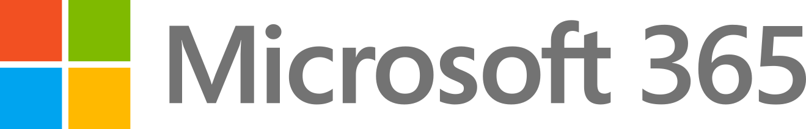

Your firm already has software and AI. It's not just about the software working together; it's about the software and the AI working together.
Keelwater connects practice management, communication, financial data and AI into repeatable workflows - so your team spends less time coordinating work and more time doing the work clients pay for.



 ChatGPT
ChatGPTThe biggest AI opportunity is often between the tools.
Most modern tax firms already have powerful software. The problem is that each system knows only part of the story. A return may say "in prep" while the preparer is actually waiting on a K-1 buried in email. A partner assigns work in Slack, but somebody still has to remember to create the task. An advisory team has Claude, QuickBooks and payroll data, but still rebuilds the client context every quarter.
Keelwater builds the connective layer so those systems behave like one operating system.
 SlackOutlook
SlackOutlook QuickBooksKarbon / TaxDomeTax software
QuickBooksKarbon / TaxDomeTax software ClaudeChatGPT
ClaudeChatGPT
Workflows your team will recognize on sight.
Know where every return really is
Turn "hey, do this" into tracked work
Slack · partner"Hey - can someone chase the K-1 for Smith and get the draft to review by Friday?"- Client: Smith
- Work: chase K-1, draft to review
- Owner: assigned
- Due: Friday
Assemble advisory context before the accountant opens the job
QuickBooksPayrollPrior returnClient historyStop manually chasing the same client requests
One client history instead of five communication silos
Sales call to proposal to onboarding, without retyping
Connect the stack without replacing everything
Put security and governance into the workflow
Map. Connect. Automate. Measure. Expand.
Map
Shadow the real workflow and identify where people manually move information, chase status or rebuild context.
Connect
Use APIs, connectors, MCPs, automations and lightweight custom code to connect the systems that already exist.
Automate
Remove repetitive coordination while keeping judgment, review and client relationships with people.
Measure
Baseline capacity, turnaround, rework, errors, open requests or other workflow-specific metrics before and after.
Expand
Once a workflow works in production, extend the same operating principles across the firm.
Show us the workflows that slow you down.
We'll map the process, identify what should stay human, and show you where software and AI can remove the coordination around it.